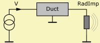
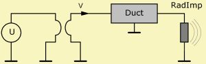

|
|
| Purpose | Flow-potential converter |
| Type | Network element (4 pole) |
| Domain | All |
| Used in | System |
Gyrator 'Any Name'
R=
BL=
The Gyrator is a four-pole lumped component, which converts flows and potentials.

with I1 and I2 flow into the first and second port (Is, Iu), and with U1 and U2 potential differences across first and second ports (U1 = Ut - Us and U2 = Uv - Uu).
G is the Gyrator Conductance.
In ABEC the Gyrator parameter is either R = 1/G or BL = 1/G. The unit of [R] = Ω and of [BL] = Tm.
In ABEC the source of the lumped element network is assumed to be a potential source. However, in case you need to implement a flow-source the Gyrator provides the trick.
 |
 |
| Volume Velocity-source in the acoustical domain. | Equivalent circuit using Gyrator with R=1. Hence V = U. |
System 'S1'
Gyrator Node=1=0=10=0
Duct 'D1' Node=10=20 Len=100mm WD=40mm HD=40mm
RadImp 'Rad1' Node=20 Def='D1'
In the above example we have effectively a flow-source because the the first component is a Gyrator, which by nature swaps network-parameters. Conveniently the Gyrator- parameter defaults to R=1. This makes the flow on the right hand side equal to the potential difference on the left and vice versa.
The Gyrator can be used to symbolize the basic properties of the electro-dynamic loudspeaker motor, as explained in more detail here.... Therefore the Gyrator accepts also the BL= parameter.